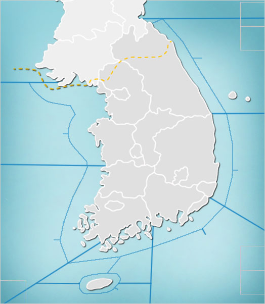

Weathertune
HOME
도시이름 검색
MAP
MAP

서울
날씨: {{ c_weather_list[0] }}
기온: {{ c_temp_list[0] }}
구름량: {{ c_cloud_list[0] }}
강수량: {{ c_rain_list[0] }}
노래추천받기
부산
날씨: {{ c_weather_list[1] }}
기온: {{ c_temp_list[1] }}
구름량: {{ c_cloud_list[1] }}
강수량: {{ c_rain_list[1] }}
노래추천받기
대구
날씨: {{ c_weather_list[2] }}
기온: {{ c_temp_list[2] }}
구름량: {{ c_cloud_list[2] }}
강수량: {{ c_rain_list[2] }}
노래추천받기
포항
날씨: {{ c_weather_list[3] }}
기온: {{ c_temp_list[3] }}
구름량: {{ c_cloud_list[3] }}
강수량: {{ c_rain_list[3] }}
노래추천받기
광주
날씨: {{ c_weather_list[4] }}
기온: {{ c_temp_list[4] }}
구름량: {{ c_cloud_list[4] }}
강수량: {{ c_rain_list[4] }}
노래추천받기
전주
날씨: {{ c_weather_list[5] }}
기온: {{ c_temp_list[5] }}
구름량: {{ c_cloud_list[5] }}
강수량: {{ c_rain_list[5] }}
노래추천받기
원주
날씨: {{ c_weather_list[6] }}
기온: {{ c_temp_list[6] }}
구름량: {{ c_cloud_list[6] }}
강수량: {{ c_rain_list[6] }}
노래추천받기
강릉
날씨: {{ c_weather_list[7] }}
기온: {{ c_temp_list[7] }}
구름량: {{ c_cloud_list[7] }}
강수량: {{ c_rain_list[7] }}
노래추천받기
천안
날씨: {{ c_weather_list[8] }}
기온: {{ c_temp_list[8] }}
구름량: {{ c_cloud_list[8] }}
강수량: {{ c_rain_list[8] }}
노래추천받기
{% if project != 0 %}
도시 이름
날씨
기온
구름량
강수량
추천 장르
{{ city }}
{{ c_weather }}
{{ c_temp }}
{{ c_cloud }}
{{ c_rain }}
{{ pred_genre }}
추천 노래 리스트
번호
제목
아티스트
앨범
장르
{% for i in num_list %}
{{ num_list[i] + 1 }}
{{ title_list[i] }}
{{ artist_list[i] }}
{{ album_list[i] }}
{{ pred_genre }}
{% endfor %} {% endif %}